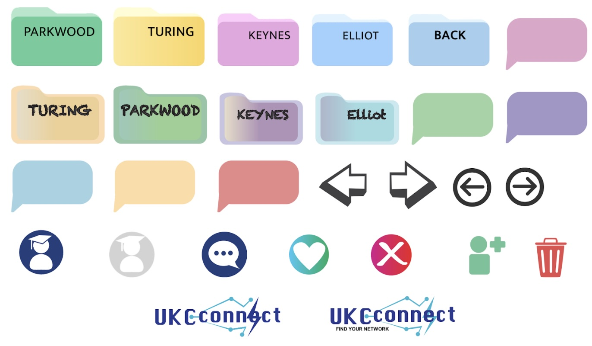

Our Award winning Group Project ⭐️
This is a showcase of our collaborative award winning group project. I led the design, frontend development and innovation of the project. With the help of my teammates, we were able to create a project we were proud of.
Figma Draft (Plan)
Template drafts I created as a plan before development. I also created personalised icons for the website using Adobe illustrator and exporting icons as SVG for scalability.
This was the Project Fair where our team was awarded “Best Innovation and DevOps Practices.” I designed the project poster to visually reflect our concept, but abstract enough to spark curiosity that is meaningful enough to invite questions and conversations about our work.

If you'd like to view the full project scope, click the "Parkwood" folder to download the corpus. This includes
the preparation, assets, source code and everything you need to know about this project.
Once downloaded, open index.html in the corpus folder, this will display all the content I've organised in a page.